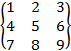

GeoGebra también opera con matrices,
representadas como una lista de listas, que contiene las filas de la matriz.
Ejemplo:
En GeoGebra, {{1, 2, 3}, {4, 5, 6}, {7,
8, 9}} representa la matriz .
Sumas y Restas - Ejemplos:
·
Matriz + Matriz:
Suma uno a uno, cada par de elementos correspondientes de una y otra matriz.
·
Matriz – Matriz:
Resta uno a uno, cada par de elementos correspondientes de una y otra matriz, entre dos compatibles
entre sí.
Multiplicación - Ejemplos:
·
Matrix * Número:
Multiplica por el número, cada uno de los elementos de la lista. matriz.
·
Matriz * Matriz:
Usa la multiplicación de matrices para calcular la matriz resultante.
Atención: Las filas de la primera y las columnas de la segunda matriz deben
tener el mismo número de elementos.
Ejemplo: {{1, 2}, {3, 4},
{5, 6}} * {{1, 2, 3}, {4, 5, 6}} dan
por resultado la matriz {{9, 12, 15},
{19, 26, 33}, {29, 40, 51}}.
·
2x2 Matriz * Punto
(o Vector): Multiplica la matriz
por el punto o vector y da por resultado un punto.
Ejemplo: {{1, 2}, {3, 4}} *
(3, 4) da por resultado el punto A = (11, 25).
·
3x3 Matriz * Punto
(o Vector): Multiplica la
matriz por el punto o vector y da por resultado un punto.
Ejemplo: {{1, 2, 3}, {4, 5,
6}, {0, 0, 1}} * (1, 2) da
por resultado el punto A = (8, 20).
Atención: Este es un caso especial de transformaciones afines donde las
coordenadas homogéneas se usan (x, y, 1) para un punto y (x, y, 0) por un vector.
Este ejemplo, es por lo tanto, equivalente a:
{{1, 2, 3}, {4, 5, 6}, {0, 0, 1}} * {1, 2, 1}.
Otros ejemplos:
(ver la sección Comandos de Matriz):
·
Determinante[Matriz]:
Calcula el determinante de la matriz dada.
·
Inversa[Matriz]:
Invierte la matriz dada
·
Traspuesta[Matriz]:
Traspone la matriz dada